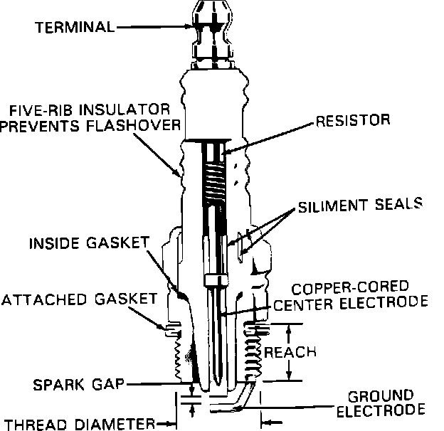
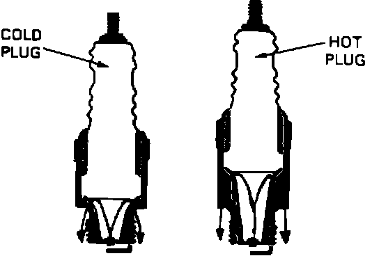

Spark Plug: Description and Operation
Spark Plug Construction:

SPARK PLUG CONSTRUCTION
Spark Plug Temperature:

SPARK PLUG HEAT RANGE
The spark plug provides a path for the high voltage of the secondary circuit to flow to ground. The only path for this voltage is through the ground electrode and center electrode across the spark gap. The spark produced when the voltage jumps the gap ignites the air/fuel mixture in the cylinder. The temperature of the spark plug is determined by the length of the insulator and the size of the heatsink area. The longer the insulator, the smaller the heatsink area, and the hotter the spark plug. The center electrode temperature ranges from a low of 392~F (200~C) at 10 m.p.h. to a high of 1472~F (800~C) at 80 m.p.h..